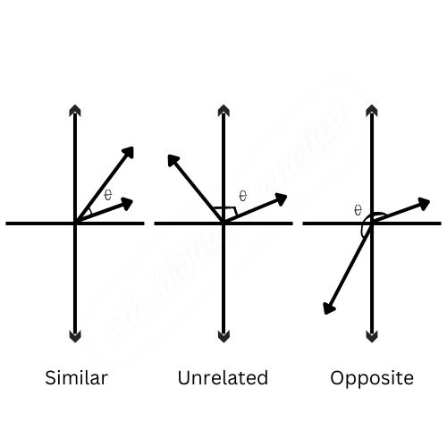

Introduction:
Understanding the connections between different elements, including genes, proteins, and biological samples, is essential to deciphering the intricate workings of living beings in the broad field of biological sciences. In biological study, cosine similarity, a mathematical notion with broad applications across various domains, emerges as a potent tool that provides insights into molecular connections, functional linkages, and evolutionary patterns.
Fundamentally, cosine similarity measures how similar two vectors are quantitatively, emphasizing the directional alignment of the vectors rather than their size. Vectors are frequently used in the biological sciences to symbolize biological phenomena including protein sequences, gene expression levels, and metabolic pathways. Through the calculation of the cosine of the angle formed by these vectors, scientists can identify patterns and differences in biological data, leading to a more profound comprehension of biological events.
Cosine similarity has a wide range of uses in the biological sciences. When it comes to gene expression analysis, cosine similarity makes it possible to compare patterns of gene expression under various experimental settings, which makes it easier to identify genes that are co-regulated, disease markers, and medication responses. It is a flexible measure that can be applied to intricate biological networks and systems in addition to individual biological entities.
We’ll look at how cosine similarity is used in biological sciences in this post, with particular emphasis on gene expression analysis.
What is Cosine Similarity?
Although cosine similarity seems complicated at first, it’s actually very easy to understand, especially when presented in an approachable way for beginners.
Envision an array of arrows, each of which stands for a distinct piece of data, like the text within a document, the attributes of an image, or the user’s preferences. The lengths and directions of these arrows vary based on the significance of each piece of information. Suppose that you work as a scientist and you perform Differential Expression Gene (DEG) study to find out how the expression of a gene varies in response to various treatments or situations. A list of all the genes and the corresponding levels of expression for each treatment is provided by DEG analysis. You can depict each treatment as a vector, with the gene expression levels acting as the vector’s constituent parts, in order to compare the DEG analysis results between different treatments. The pattern of gene expression for that treatment is indicated by the vector’s orientation.
Angle Between Treatment Vectors: The cosine of the angle between the treatment vectors is computed using cosine similarity. The cosine similarity score of two treatment vectors will be near to 1, signifying high similarity, if they point in comparable directions, suggesting similar patterns of gene expression across treatments. On the other hand, the cosine similarity score of the treatment vectors will be closer to 0 if they point in entirely different directions, indicating low similarity.
Magnitude of Treatment Vectors: As in other applications, cosine similarity in DEG analysis only takes into account the direction of the treatment vectors rather than their magnitude, or the precise gene expression levels. This enables you to pay more attention to the general pattern of changes in gene expression than to the precise expression levels.
To put it another way, cosine similarity in DEG analysis aids in measuring how similar gene expression patterns are to one another across various treatments. It makes it possible to find therapies that cause comparable modifications in gene expression, which may offer important new understandings of the underlying biological mechanisms. Biologists and researchers can learn more about how various treatments impact gene expression and may find novel therapeutic targets or approaches to cure a variety of illnesses and ailments by utilizing cosine similarity.
This can be expressed in mathematical notation as;
\[\underset{similarity}{cosine(\theta)} = \frac{A.B}{||A||.||B||}\]
Where, \(A.B\) is the dot product of the vectors A and B, and \(∥A∥\) and \(∥B∥\) are the magnitudes of vectors A and B, respectively.
If the angle is small (close to 0 degrees), the cosine value is close to 1, indicating high similarity. Conversely, if the angle is close to 90 degrees, the cosine value is close to 0, indicating low similarity. This can be observed from the following animation,

How Does Cosine Similarity Work in Biological Analysis?
A closer examination of gene expression patterns under various treatment or condition scenarios is necessary to comprehend the operation of cosine similarity in the context of biological investigation, especially in Differential Expression Gene (DEG) studies. Assume you are researching how various medication regimens affect the expression of certain genes in cancer cells. Following DEG analysis, lists of genes and the corresponding levels of expression under each treatment are obtained. Every treatment can be conceptualized as a vector, with the gene expression levels acting as the vector’s constituent parts.
Now, let’s get into how cosine similarity operates in this biological context:
Angle Between Treatment Vectors: The cosine of the angle between the treatment vectors is computed using cosine similarity. The similarity in gene expression patterns between treatments is represented by this angle. The cosine similarity score of two treatment vectors will be near to 1, showing high similarity, if they point in comparable directions, reflecting similar patterns of gene expression across treatments. On the other hand, the cosine similarity score of the treatment vectors will be closer to 0 if they point in entirely different directions, indicating low similarity.

For instance, the treatment vectors for Treatments A and B will point in similar directions if they both cause comparable changes in gene expression, which would result in a high cosine similarity score. This would suggest that the effects of the two therapies on gene expression are similar.
Magnitude of Treatment Vectors: It’s important to note that cosine similarity in DEG analysis only takes into account the direction of the treatment vectors, not their magnitude (i.e., the precise expression levels of genes). This means that the cosine similarity score of two treatments will stay high even if one causes greater changes in gene expression than the other, provided that the patterns of changes in gene expression are comparable.
Examine the following two treatments: A and C. While Treatment C may cause more dramatic changes in expression levels but in a pattern comparable to Treatment A, Treatment A may cause moderate changes in gene expression across a wide range of genes. In this instance, the cosine similarity score between Treatment A and Treatment C would still be high despite the magnitude discrepancies, indicating similar gene expression patterns.
Applications of Cosine Similarity in Biological Analysis:
Despite having its roots in mathematics and computer science, cosine similarity has a wide range of uses in biological investigation, especially when interpreting high-dimensional data like gene expression profiles. Let’s examine the biological applications of cosine similarity;
Comparative Analysis of Gene Expression: Comparing the patterns of gene expression in various biological samples or experimental settings is one of the main uses of cosine similarity in biology. Cosine similarity is a tool that allows researchers to assess the similarity of gene expression patterns by describing these profiles as vectors. This makes it possible to identify genes that, in similar expression patterns under particular circumstances, provide information on putative regulatory mechanisms or biological pathways.
Biological Sample Clustering: Based on their gene expression profiles, biological samples can be more easily grouped together thanks to cosine similarity. Researchers can find underlying patterns or subtypes in complicated biological data sets by grouping similar samples together based on pairwise similarity. This clustering method is useful for distinguishing different biological states, describing therapy responses, and identifying disease subgroups.
Finding Functionally Related Genes: Cosine similarity can be utilized in functional genomics research to find genes that are functionally related based on how they express themselves under various circumstances. High cosine similarity expression profile genes are probably part of similar biological pathways or activities. This information helps prioritize potential genes for additional experimental validation, analyze pathways, and clarify the roles of individual genes.
Integration of Multi-Omics Data: Since high-throughput technologies have been available, a variety of omics data, including as transcriptomics, proteomics, metabolomics, and genomics, have been included in biological data sets. Cosine similarity, which measures the similarities between several molecular profiles, offers a foundation for integrating multi-omics data. Through the use of an integrated approach, researchers are able to fully understand biological systems and unearth intricate interactions between molecular components.
Drug Re-purposing and Target Identification: By contrasting the gene expression profiles of potential compounds or medications with those of established pharmacological agents, cosine similarity can be utilized in drug discovery and re-purposing endeavors. Gene expression patterns that are similar among substances may indicate similar mechanisms of action or therapeutic benefits. Additionally, the identification of novel therapeutic targets or bio-markers for the diagnosis and prognosis of disease can be facilitated by cosine similarity analysis.
Advantages of Cosine Similarity in Biological Analysis:
When evaluating biological data, cosine similarity is the method of choice due to its many benefits, especially when it comes to gene expression research and other omics investigations. following are a few of these benefits and their implications for biological research;
Scale Invariance: The scale invariance property of cosine similarity is one of its main benefits. Cosine similarity is independent of the size of the vectors that reflect the gene expression profiles, in contrast to certain distance-based metrics. Scale invariance guarantees that cosine similarity focuses exclusively on the direction of gene expression changes, which enables meaningful comparisons across data sets in biological investigations where gene expression levels might vary greatly between experiments or situations.
Cosine similarity is computationally efficient, especially in high-dimensional spaces that are frequently encountered in omics data analysis. The curse of dimensionality and computing complexity may befall standard distance measures because biological data sets can contain thousands of genes or molecular characteristics. Because cosine similarity measures the angle between vectors directly, it avoids these problems and is hence a good fit for high-throughput testing and large-scale studies.
Simple explanation: In biological analysis, the cosine similarity score, which ranges from -1 to 1, has a simple explanation. High similarity across gene expression profiles, indicated by a score near 1, suggests shared regulatory mechanisms or functional links. On the other hand, a score that is near to 0 denotes dissimilarity and differing patterns of expression. This ease of interpretation makes it easier for researchers to intuitively comprehend the results and makes well-informed judgments on the design of experiments and the interpretation of data.
Robustness to Noise and Outliers: The cosine similarity in biological data sets is naturally resistant to noise and outliers. Because of biological heterogeneity, technical errors, or experimental noise, gene expression data frequently show inherent variability. Cosine similarity reduces the impact of erratic data points and strengthens the statistical significance of analysis outcomes by emphasizing the direction rather than the quantity of changes in gene expression. Even in the face of faulty data, the findings’ dependability and reproducibility are guaranteed by their resilience to noise.
Application to Sparse Data: Gene expression data matrices in biological research are frequently sparse, with many genes displaying essentially constant expression levels across samples. Because cosine similarity only takes into account the non-zero elements of the vectors that describe gene expression patterns, it is an excellent tool for assessing sparse data. This characteristic makes it possible to compute gene expression patterns accurately and efficiently, even in datasets with a high percentage of zero entries.
Limitations of Cosine Similarity in Biological Analysis:
While there are many benefits to using cosine similarity in biological data analysis, it’s crucial to be aware of its limitations in order to ensure proper interpretation and insightful conclusions. In the context of biological analysis, cosine similarity has the following significant limitations;
Sensitive to Vector Length: Cosine similarity only takes into account the vectors’ orientations, not their sizes, while analyzing gene expression profile vectors. Although this characteristic is helpful in many situations, it can also be a drawback, especially when comparing vectors with different lengths. Gene expression levels in biological data sets might change significantly between studies or situations, which can result in variations in vector magnitudes. These variations could be ignored by cosine similarity, which could lead to inaccurate similarity evaluations.
Inability to Capture Non-Linear Relationships: Cosine similarity makes the assumption that related gene expression profiles match in a high-dimensional space and display linear relationships. However, because of the inherent complexity of biological systems, non-linear correlations are frequently involved in gene-gene interactions. Such non-linear relationships may go unnoticed by cosine similarity, which could result in erroneous comparisons of the similarity of gene expression patterns. Techniques for dimensionality reduction or other alternative similarity metrics may be more appropriate in situations where non-linear correlations are common.
Limited Discriminative Power: The angle between vectors is measured by cosine similarity, which does not take the context or semantic significance of changes in gene expression into account. Therefore, even when genes fall into different biological pathways or functional categories, they may still be regarded as comparable if they have similar expression patterns. The discovery of physiologically significant similarities may be hampered by this lack of discriminative capacity, which may call for further investigations such as route enrichment or functional annotation.
Vulnerability to Data Preprocessing: Cosine similarity’s usefulness in biological analysis is largely dependent on the caliber and preparation of the input data. Similarity evaluations can be greatly impacted by variables including batch correction, gene filtering, and data standardization. Cosine similarity results can be distorted by improper data preprocessing procedures or biases introduced during data handling, which can result in incorrect conclusions. To reduce biases and guarantee reliable similarity analysis, data preprocessing techniques must be thoroughly assessed and validated.
Sparse Data Challenges: Although cosine similarity is effective in managing sparse data, it may not work well in data sets with very high sparsity, where the majority of the entries are zero. In these situations, a large number of zero values may predominate in the similarity computations, which may conceal significant similarities between the gene expression patterns. To lessen the impact of data sparsity on cosine similarity analysis, careful evaluation of sparsity and suitable preprocessing approaches are required.
Conclusion
To sum up, cosine similarity is a useful quantitative metric in biological research, especially in the context of Differential Expression Gene (DEG) investigations, since it allows evaluation of the degree of similarity between gene expression patterns under various conditions or treatments. Researchers can find treatments with similar effects on gene expression by focusing on the direction of changes in gene expression rather than specific expression levels. This helps uncover possible therapeutic interventions and provides insights into disease mechanisms.
In addition, cosine similarity is a vital analytical technique in biology that makes it easier to explore, assess, and integrate high-dimensional biological data. It is useful in many molecular biology, genetics, and bio-medical research domains due to its advantages, which include scale invariance, computing efficiency, easy interpretation, resilience to noise, and adaptability to sparse data. By taking use of these benefits, scientists can further their understanding of intricate biological systems and hasten the advancement of bio-medical research.
But it’s important to recognize the limitations of cosine similarity and take them into account when examining particular research questions and characteristics of the data. Through the use of supplementary methods to augment cosine similarity and the consideration of its constraints, investigators can augment the accuracy and robustness of similarity analysis in biological research.
visit the post Non-sense Mediated Decay